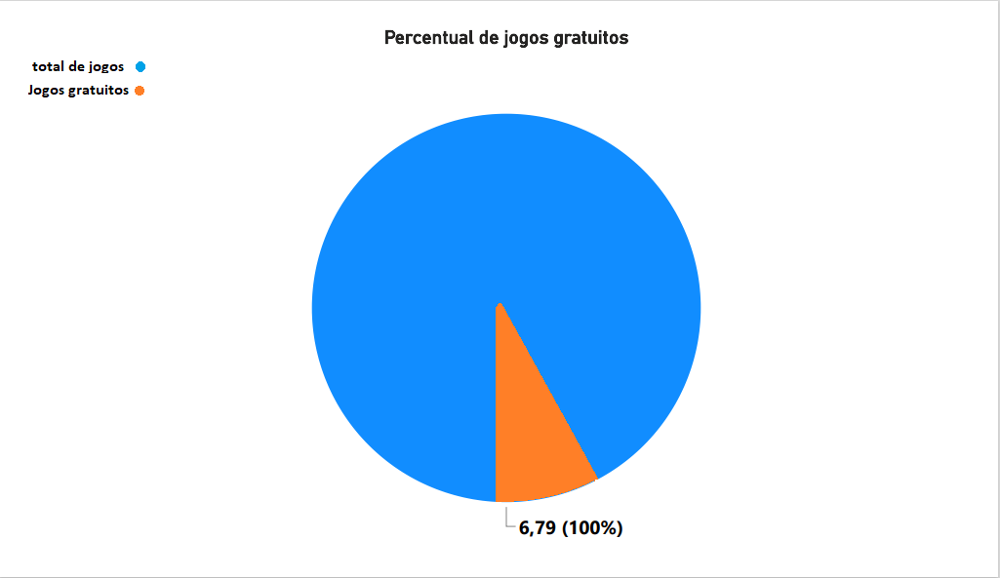

• Jogos + 18 do gênero ação apenas para windows
• Quantidade de jogos gratuitos em relação ao total de jogos
• Top 5 jogos mais populares (Com base no tempo gasto jogando e segundo as avaliações positivas)
Clique na estatística desejada e veja o que desejar.
Voltar ao mapa
Rever estatísticas
Jogos + 18 do gênero ação apenas para windows
×
Quantidade de jogos gratuitos em relação ao total de jogos
×

Top 5 jogos mais populares (Com base no tempo gasto jogando e segundo as avaliações positivas)
×